I am a Ph.D. student in Computer Science working in the
Interactive Data Lab at the University of Washington, Seattle, and advised by
Dr. Leilani Battle.
My research work lies in the fields of Information Visualization, Interactive Data Analytics and Computer Graphics,
with a focus on understanding how people perceive visualizations, and leveraging advancements in graphics and database
systems to create scalable visualization systems for large scale data. My end goal is to use big data visual analysis systems
for environmental sciences, to improve its accessibility for the common people.
I earned my Master's Degree in Computer Science at the University of Maryland, College Park in December 2020. Before
starting my graduate studies, I worked at NVIDIA, Pune as a System Software Engineer in the Gaming Products team. Prior
to that, I received my Bachelor's Degree in Computer Science at BITS-Pilani Goa, India in May 2016. Besides my research area,
I have also completed coursework in Systems, Computer Vision, Machine Learning and Game Design, and I actively practise photography!
News
September 2021 - Started PhD at University of Washington, Seattle with Dr. Leilani Battle
June 2021 to September 2021 - Research Intern at INRIA Saclay, France with
Dr. Jean-Daniel Fekete
January 2021 - Started PhD in Computer Science at University fo Maryland, College Park with Dr. Leilani Battle
December 2020 - Graduated with a Masters in Computer Science from University of Maryland, College Park
June 2019 to August 2019 - Research Assistant Intern at Fraunhofer CESE, MD with Dr. Marcel Schäfer
Publications
A. Aguinaldo, P.-Y. Chiang, A. Gain, A. Patil, K. Pearson and S. Feizi, "Compressing GANs using Knowledge Distillation",
CoRR, vol. abs/1902.00159, 2019. arXiv:1902.00159
Projects
Physically Based Clustering Visualization
Course Project for Physically Based Modelling, Simulation and Animation - CMSC828X
Implemented a data analysis/visualization tool with interactions modelled on real-life physical forces
using the D3-Force API. The specific use case targeted was evaluating word embeddings created by different
methods, wherewords closer in the vector space belonged to the same cluster. For more details, click on the
link
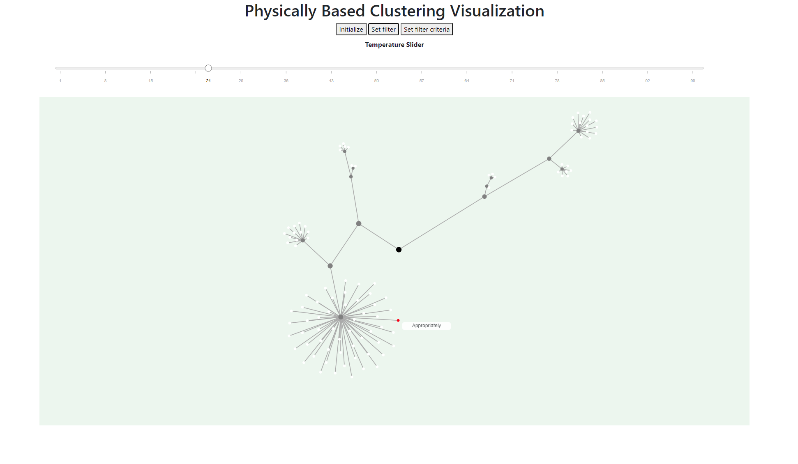
Basic interface of the physically based word vector encoding visualization tool
Adding shadows to a scene using CNN
Course Project for Advanced Computer Graphics - CMSC740
Trained a cGAN (Conditional Generative Adversarial Network) model to generate shadows in a scene, given the scene without shadows, the depth map and
the lightsource position map. Used the pix2pixmodel for the task.
Input to the model - scene without shadows; light source map; object depth map from 8 orthographic views; ground truth image
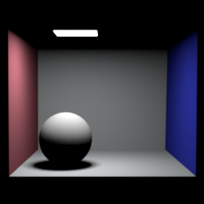
Sample ground truth
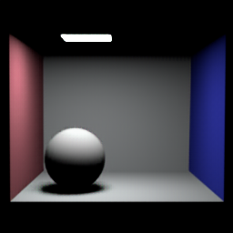
Corresponding sample model output
Sample ground truth
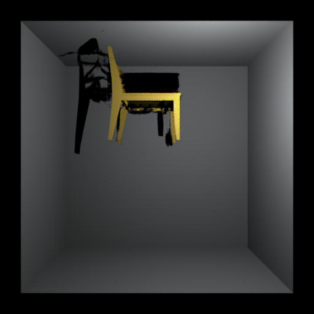
Corresponding sample model output
"Lumos" Board and Video Game
Course Project for Game Design - INST728E
Designed a board game and a video game based on the theme of propagating light in a 2D space. Click on the links for more details about the games.
Created a gesture based virtual music instrument dashboard using LEAP Motion. Implemented string instruments like piano and harp,
and percussion instrument like drums. Implementation done using Java Swing and LEAP Motion SDK
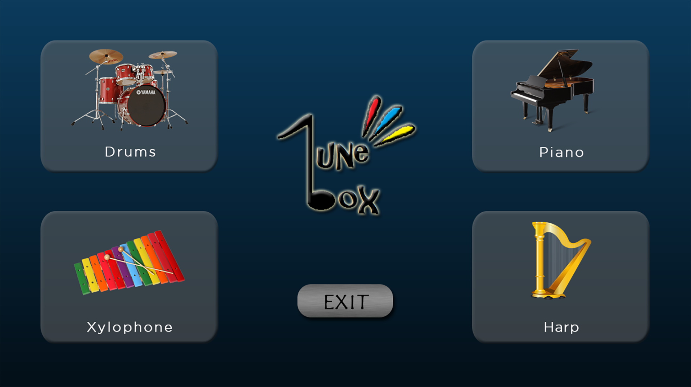
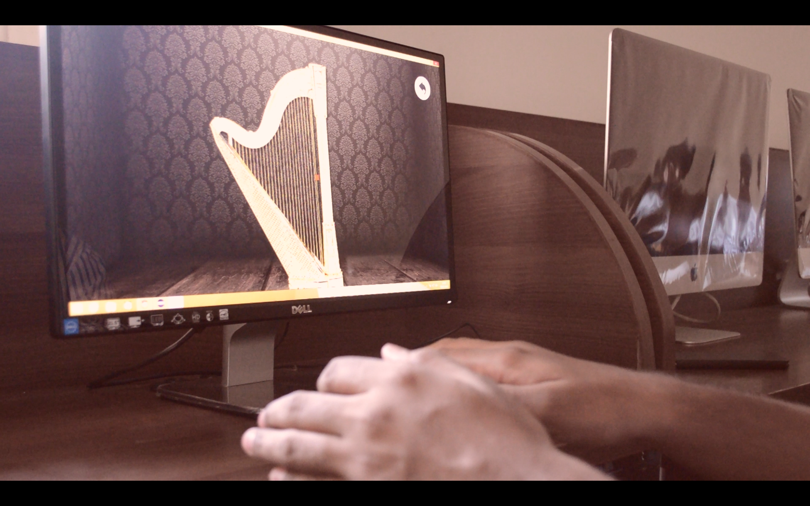
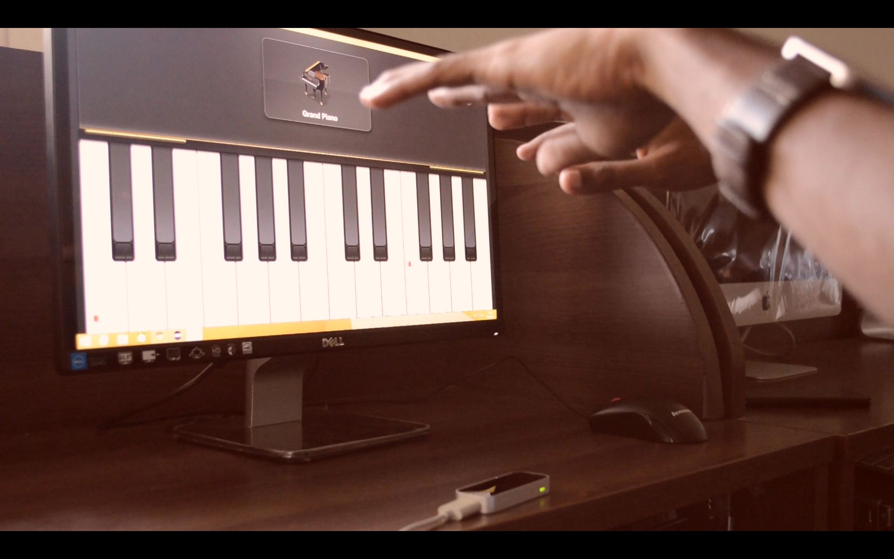
Extra-Curricular
Outside of my academic life, I pursue digital photography as a hobby which is one of the reasons I found Computer Vision and Graphics intriguing.
I have maintained my photography profile @ameyabp on
Instagram. I am also crazy about the game of cricket, love adventure activities and travelling, often writing down my experiences via blogs at Musings.


 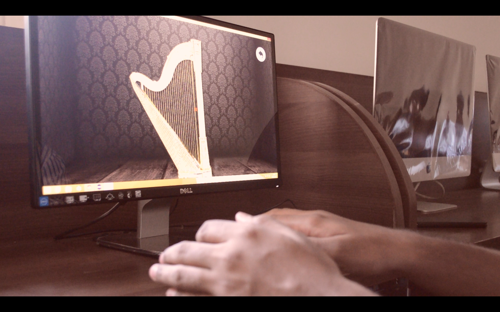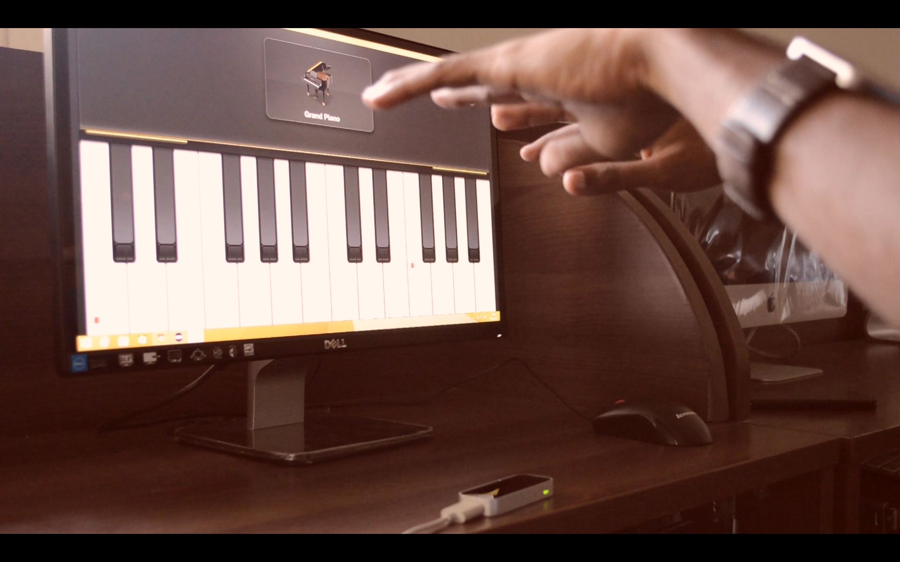
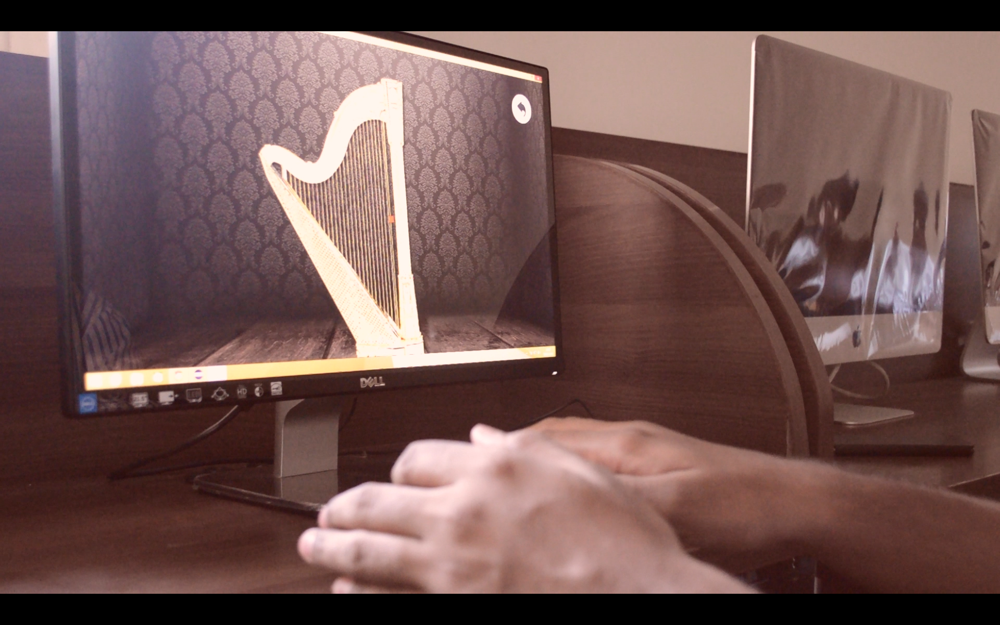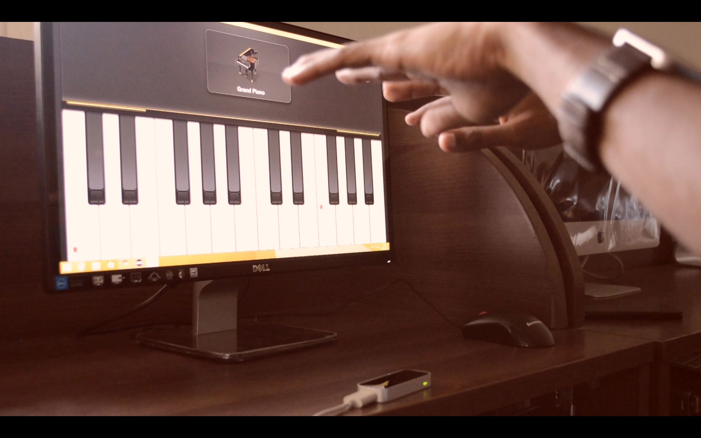